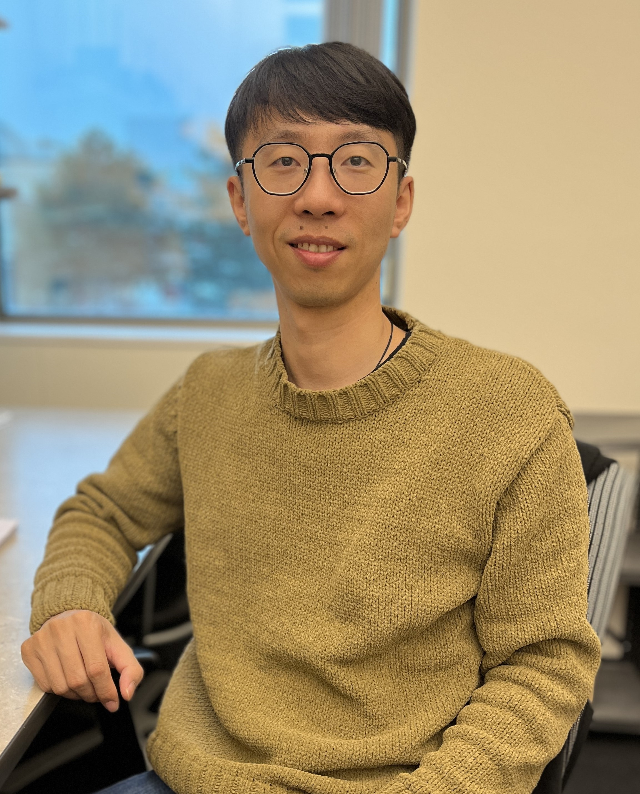

Research interests
My research focuses on developing optimization and machine learning algorithms for decision-making under uncertainty. I am particularly interested in online algorithms for sequential decision-making, learning-augmented algorithms that make reliable use of imperfect predictions, and multi-objective optimization approaches that balance efficiency, fairness, risk, and sustainability. My work is motivated by applications in energy systems, data centers, and other large-scale networked systems.
Open positions
I am looking for self-motivated undergraduate, MSc, and PhD students who are interested in sequential decision-making under uncertainty, optimization, machine learning, and related problems in networked systems. To express your interest, please email me a brief description of your research interests and relevant experience, together with your CV and transcripts. Due to the volume of inquiries, I may only be able to respond to shortlisted candidates.
Selected publications
-
WWW 2026
Online Rounding and Pricing Schemes for k-Rental Problems
H. Nekouyan, B. Sun, R. Boutaba, and X. Tan, ACM WWW, 2026.
-
SIGMETRICS 2025
Online Allocation with Multi-Class Arrivals: Group Fairness vs Individual Welfare
F. Zargari, H. Jazi, B. Sun, and X. Tan, ACM SIGMETRICS, 2025.
-
SIGMETRICS 2025
Learning-Augmented Competitive Algorithms for Spatiotemporal Online Allocation with Deadline Constraints
A. Lechowicz, N. Christianson, B. Sun, N. Bashir, M. Hajiesmaili, A. Wierman, and P. Shenoy, ACM SIGMETRICS, 2025.
-
ICML 2024
Online Algorithms with Uncertainty-Quantified Predictions
B. Sun, J. Huang, N. Christianson, M. Hajiesmaili, A. Wierman, and R. Boutaba, ICML, 2024.
-
WINE 2024
Static Pricing for Online Selection Problem and its Variants
B. Sun, H. Jazi, X. Tan, and R. Boutaba, WINE, 2024.
-
COLT 2024
Risk-Sensitive Online Algorithms
N. Christianson, B. Sun, A. Wierman, and S. Low, COLT, 2024.
-
SIGMETRICS 2023
The Online Knapsack Problem with Departures
B. Sun, L. Yang, M. Hajiesmaili, A. Wierman, J.C.S. Lui, D. Towsley, and D.H.K. Tsang, ACM SIGMETRICS, 2023.